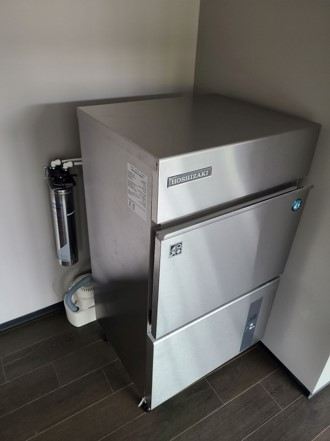
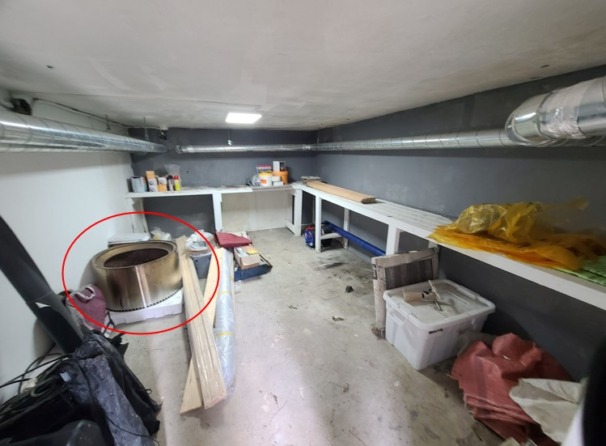
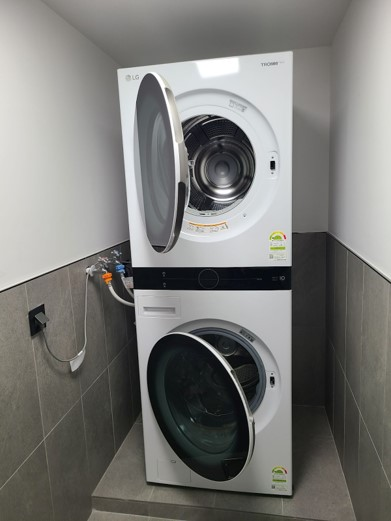

🧱 HARD RULES
이건 반드시 지켜주세요.
- 쉘터 앞 텐트 설치 및 차량 주차 금지
- 쉘터 내부에서 식사, 취사, 취침 행위 금지
- 예약자 없이 동반인만 이용하는 행위 금지
We don't want to be strict,
but this place runs on trust. Let's keep it awesome.
🏕️ 캠핑 가능/불가 구역 안내
안전하고 쾌적한 캠핑을 위해 지정된 구역 내에서만 캠핑을 해주세요.

* 위 이미지는 드론으로 촬영한 캠핑장 전경입니다. 지정된 구역을 확인하시고 캠핑해 주세요.
🏠 쉘터 이용 안내
개방공간
쉘터는 지하 1층만 개방합니다. 지상 1층은 출입이 금지됩니다.
사용 가능 시설
냉장고, 제빙기, 워시타워, 화장실, 샤워장
지참 필수 항목
휴지, 세제, 샴푸 등 개인 위생용품은 직접 준비해주세요
(회사에서 제공하지 않습니다)
전기 사용
외부 정자 및 건물 외벽 콘센트만 사용 가능
쉘터 내부에서 외부로 전기 연결은 금지됩니다
🔧 시설물 이용 안내
제빙기

위치 : 지하1층 거실
제빙기 사용 방법
- 전원 및 급수 확인: 제빙기의 전원과 급수 연결 상태를 확인합니다.
- 전원 켜기: 전원이 꺼져있을 경우 버튼을 눌러 제빙기를 작동시킵니다.
- 제빙 과정: 제빙기가 자동으로 얼음을 생성합니다.
- 얼음 수거: 얼음 저장고에 얼음이 충분히 쌓이면, 스쿠프 등을 이용하여 필요한 만큼 꺼내 사용합니다.
사용 후 관리
- 제빙기 내부를 청결하게 유지하고, 정기적으로 세척하여 위생을 관리합니다.
주의 사항
- 제빙기 주변을 깨끗하게 유지하여 오염원이 들어가지 않도록 주의하세요.
- 정기적인 필터 교체 및 내부 청소를 통해 제빙기의 수명을 연장할 수 있습니다.
화로대

위치 : 창고(지하1층 현관 옆)
화로대 사용 방법
- 설치 장소 선택: 화로대를 평평하고 안전한 장소에 설치합니다. 주변에 인화성 물질이 없는지 확인하세요.
- 연료 준비: 건조한 장작이나 목재를 준비합니다.
- 점화:
- 화로대 내부에 작은 점화용 목재나 종이를 넣습니다.
- 그 위에 장작을 적절히 쌓습니다.
- 점화 도구를 이용하여 불을 붙입니다.
- 연소 중 관리:
- 불길이 안정되면 추가로 장작을 넣어 원하는 화력을 유지합니다.
- 연소 중에는 화로대를 이동하거나 만지지 마세요.
- 사용 후 관리:
- 불이 완전히 꺼질 때까지 기다린 후, 남은 재를 제거합니다.
- 화로대가 완전히 식으면 보관하거나 다음 사용을 위해 준비합니다.
주의 사항
- 화로대 사용 시 주변에 소화 장비를 비치하여 안전사고에 대비하세요.
- 어린이나 반려동물이 화로대에 접근하지 않도록 주의하세요.
- 바람이 강한 날에는 사용을 자제하여 화재 위험을 방지하세요.
워시타워

위치 : 지하1층 현관 옆 세탁실
세탁기 사용 방법
- 전원 켜기: 전원 버튼을 눌러 세탁기를 켭니다.
- 세탁물 넣기: 세탁물의 용량(최대 23kg)을 확인하고, 세탁조에 고르게 넣습니다.
- 세제 및 섬유유연제 투입: 전용 투입구에 적정량의 세제와 섬유유연제를 넣습니다.
- 세탁 코스 선택: 세탁물의 종류와 오염도에 맞는 세탁 코스를 선택합니다.
- 시작: '시작/일시정지' 버튼을 눌러 세탁을 시작합니다.
- 세탁 완료 후: 세탁이 완료되면 세탁물을 꺼내고, 도어를 열어 내부를 환기시킵니다.
건조기 사용 방법
- 전원 켜기: 전원 버튼을 눌러 건조기를 켭니다.
- 세탁물 넣기: 건조할 세탁물을 건조기 드럼에 넣습니다. (최대 20kg)
- 건조 코스 선택: 세탁물의 종류에 맞는 건조 코스를 선택합니다.
- 시작: '시작/일시정지' 버튼을 눌러 건조를 시작합니다.
- 건조 완료 후: 건조가 완료되면 세탁물을 꺼내고, 도어를 열어 내부를 환기시킵니다.
주의 사항
- 세탁 및 건조 용량을 초과하지 않도록 주의하세요.
- 사용 후 도어를 열어 내부를 건조시키고, 주기적으로 필터를 청소하여 성능을 유지하세요.
♻️ 쓰레기 처리
봉투 사용
지정된 쓰레기봉투(창고 비치)를 사용해주세요
배출 장소
일반 및 재활용쓰레기는 마을 입구 품바재생예술체험촌(주소 : 충북 음성군 원남면 원중로399번길 30) 옆에 배출하거나 반드시 되가져가야합니다.
분리수거 필수
재활용 분리수거는 정확히 부탁드립니다
📝 이용 보고 & 피드백
시설 이상 발견 시
즉시 제보 부탁드립니다
운영 피드백
이용 후 설문조사를 통해 운영 품질을 함께 높여갑니다
🌿 헬리녹스 쉘터는 모두의 쉼터입니다
조용하고 쾌적한 환경을 위해
작은 배려, 서로의 책임, 그리고 헬리녹스다운 태도를 지켜주세요.